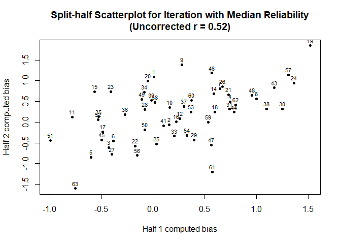

Introduction
AATtools provides tools to deal with data from implicit psychological tasks. It provides methods to compute reliability and aggregate data into bias scores.
Install it this way:
install.packages("AATtools")
Rationale
Reliability scores are typically not computed for psychological tasks that produce a sum score. This has led to a literature full of inconsistent results and methodological decisions that have been guided by intuition rather than empirical decisionmaking. AATtools tries to solve these problems by providing multiple methods of computing the reliability of the Approach-Avoidance task as well as other implicit psychological tasks. Importantly, it enables researchers to compute the reliability of their entire data processing pipeline, factoring in the influence of decisions to remove or keep outliers in the final reliability score. This gives the researcher a clear overview over how reliable the data are that have actually been used in the study’s analyses and enables them to explore the best ways to deal with non-normality, outliers and error trials.
Getting your data in the right format
AATtools works with long-format data.frames that follow a specific format. Your data.frame should contain one trial per row, and it should contain variables that designate the relevant conditions (approach/avoidance, control/target stimuli). For best results, approach and approach-associated stimulus categories should be indicated with a 1 while avoidance and avoidance-associated stimulus categories should be labelled with a 0.
Computing reliability
If your data is in the right format, you can get started right away. The aat_splithalf function allows you to approximate the reliability of any kind of summary score and data cleaning pipeline.
#This is a built-in dataset dataset <- erotica[erotica$is_irrelevant==0,] split <- aat_splithalf(ds=dataset, #our dataset subjvar="subject", #the column designating participant IDs pullvar="is_pull", #the column designating approach (1) and avoidance (0) trials targetvar="is_target", #the column designating target (1) and control (0) stimulus trials rtvar="RT", #the column designating reaction times iters=1000, #Set the number of bootstrapping iterations (more is better) trialdropfunc="trial_prune_3SD", #Indicate whether outliers should be removed, and if so, how casedropfunc="case_prune_3SD", #Indicate whether outlying approach bias scores should be removed algorithm="aat_dscore", #The algorithm by which approach bias scores should be computed plot=F #Should the results be plotted immediately? ) print(split)
##
## r (58) = 0.52, p = 1.54e-06, 95%CI = [0.38, 0.65]
## Spearman-Brown-corrected r (58) = 0.69, p = 1.35e-13plot(split)

Alternatively, you can use q_reliability to compute an exact reliability score for your data.
An exact reliability score for all implicit tasks with difference scores: q_reliability()
This function performs a linear regression to the data of each participant, and derives the unstandardized beta and variance of one of the predictors. If this predictor is the intercept, the resulting beta is functionally equivalent to the simple mean reaction time of the participant; if it is a binary main effect, the beta is equivalent to the difference between condition 1 and condition 0; and if it’s an interaction term, the beta is equivalent to a double-difference score. The variance among betas is then compared to the overall variance within betas. The reliability computed by q_reliability thus represents the ratio between between-subjects variance and within-subjects variance, where 0 means there is equal variance within and between subjects, and 1 means the bias scores are entirely accurate. Despite its exact nature, q_reliability is less representative of your actual experimental data, because it does not use the exact algorithms and outlier rejection rules that the researcher used - it does not model, for example, the inherent variability that is caused by outlier rejection.
dataset_relevant <- erotica[erotica$is_irrelevant==0,] dataset_irrelevant <- erotica[erotica$is_irrelevant==1,] # Reliability of the relevant-feature AAT qreliability_relevant <- q_reliability(ds=dataset_relevant, #the data subjvar="subject", #the name of the column containing participant IDs formula=RT~is_pull*is_target, #Here we specify the way bias scores are to be computed (see above) aatterm="is_pull:is_target" #The term in the regression formula which represents the bias score ) print(qreliability_relevant)
# Reliability of the irrelevant-feature AAT qreliability_irrelevant <- q_reliability(ds=dataset_irrelevant, subjvar="subject", formula=RT~is_pull*is_target, aatterm="is_pull:is_target" ) print(qreliability_irrelevant)
Computing Cronbach’s alpha for your experiment
Cronbach’s alpha is a common, but suboptimal method to compute the reliability of psychological experiments. In the context of the AAT, approach bias scores are computed per stimulus for each participant, after which Cronbach’s alpha is computed by treating each stimulus approach bias score as a separate item in a questionnaire. This method is heavily dependent on the number of stimuli included in the experiment, rather than the number of trials as a whole. Additionally, it does not tolerate missing trials, meaning either outliers need to be included or winsorized, or entire stimuli or participants must be excluded. It has been included for the sake of completeness.
dataset <- erotica #This dataset is unfortunately not suitable for the application of this method. We artificially make it compatible by pretending there are only 10 stimuli per category rather than 40. dataset$stimulus<- substr(as.character(dataset$stimulus),5,5) #We use the special jackknife function, which allows us to diagnose flaws in the experiment by computing Cronbach's alpha while single stimuli or participants are excluded. alpha<-aat_alpha_jackknife(ds=dataset, #The dataset subjvar="subject", #Name of the column with participant IDs stimvar="stimulus",#Name of the column with stimulus IDs pullvar="is_pull", #Name of the column indicating approach or avoid trial rtvar="RT", #Name of the column indicating reaction time algorithm="aat_singlemeandiff") #Method to compute stimulus-specific approach bias scores with. Currently limited to mean and median difference scores. print(alpha)
## Alpha = 0.21
## Based on 10 valid stimuli and 58 valid participants.
## Largest alpha achieveable through single stimulus omission = 0.28 (3)
## Largest alpha achieveable through single participant omission = 0.27 (subject-56)plot(alpha)

Computing confidence intervals for bias scores
The aat_bootstrap function can be used to compute bias scores from random permutations of the data, and derive per-participant confidence intervals from these bootstrapped bias scores. This lets users quantify for which participants the bias scores are accurate and for which participants they are not.
dataset <- erotica boot <- aat_bootstrap(ds=dataset, subjvar="subject", pullvar="is_pull", targetvar="is_target", rtvar="RT", iters=1000, trialdropfunc="trial_prune_3SD", algorithm="aat_dscore", plot=F ) print(boot)
## Bootstrapped bias scores and confidence intervals
## Mean bias score: 0.1385118
## Mean confidence interval: 0.8995987
## reliability: q = 0.1385118
## Number of iterations: 1000plot(boot)
Computing bias scores
The aat_compute function can be used to compute bias scores. This can save a lot of coding time.
dataset_relevant <- erotica[erotica$is_irrelevant==0,] dataset_irrelevant <- erotica[erotica$is_irrelevant==1,] relevant_scores <- aat_compute(ds=dataset_relevant, subjvar="subject", pullvar="is_pull", targetvar="is_target", rtvar="RT", trialdropfunc="trial_prune_3SD", algorithm="aat_dscore") irrelevant_scores <- aat_compute(ds=dataset_irrelevant, subjvar="subject", pullvar="is_pull", targetvar="is_target", rtvar="RT", trialdropfunc="trial_prune_3SD", algorithm="aat_dscore") all_scores <- merge(relevant_scores,irrelevant_scores, by="subject", all=T) plot(all_scores$ab.x,all_scores$ab.y)

Evidently, there is no relationship between relevant-feature and irrelevant-feature bias scores in this dataset.